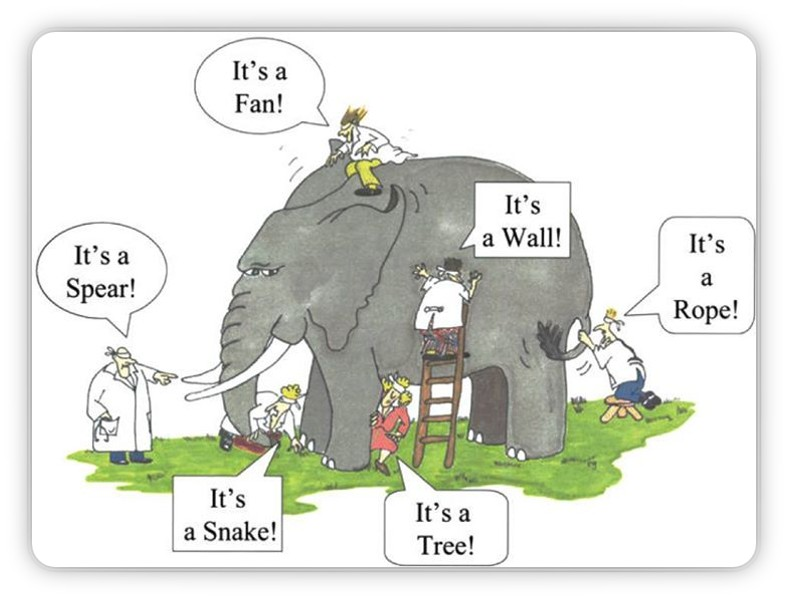

Encountering Daoism
Chapter Seven — Day 2
PHIL 210: World Religions
Navigation:
→ / Space: Next slide
← : Previous slide
S: Speaker notes
F: Fullscreen
O: Overview
ESC: Exit/Close
What Is "Daoism"?
A Complicated Category
Daoism (also spelled "Taoism") includes:
- Philosophical texts (Daodejing, Zhuangzi)
- Religious traditions (priests, temples, rituals)
- Practices (meditation, alchemy, martial arts)
- Folk traditions (gods, spirits, feng shui)
⚠️ Important Corrective:
Western scholars once separated "philosophical Daoism" from "religious Daoism." Current scholarship sees these as intertwined aspects of one tradition.
Laozi — The Old Master
A Legendary Figure
- Name means "Old Master" — possibly a title, not a name
- Traditional story: archivist who left civilization
- Historical person? Probably not — or a composite
- What matters: the Daodejing, not the biography
Legend says Laozi wrote the Daodejing at the western border before disappearing from history.
According to tradition, Laozi was a royal archivist who, disgusted with civilization's corruption, rode west on an ox. A border guard asked him to record his wisdom before leaving. The result: the Daodejing. Historically dubious, but a great story.
Click for the full legend →
The Daodejing (道德經)
Classic of the Way and Virtue
- Compiled 4th–3rd century BCE (not by one author)
- About 5,000 Chinese characters — very short
- 81 brief chapters of poetry and paradox
- Most translated Chinese text after the Bible
Key insight: This isn't a philosophical treatise. It's poetry. It's meant to unsettle, not explain.
Dao (道) = Way/Path
De (德) = Virtue/Power
Jing (經) = Classic/Scripture
Sometimes written as one word: Daodejing. Older books use Wade-Giles romanization: Tao Te Ching.
What does the title mean? →
Reading the Daodejing
Expect Paradox
"The Dao that can be spoken is not the eternal Dao.
The name that can be named is not the eternal name."
— Daodejing, Chapter 1
This isn't mystical obscurantism. It's making a point: ultimate reality exceeds language.
The moment you define the Dao, you've limited it. The moment you think you've grasped it, it's slipped away.

The Dao as cosmic order—fluid, ever-changing, and interconnected
Dao (道) — The Way
The Dao is the fundamental pattern of the universe:
- Source and sustainer of all things
- Ineffable—transcends human comprehension
- Total spontaneity and incessant transformation
- Not a god to worship, but a way to align with
- Underlying unity of all existence
"There was something formless yet complete, that existed before heaven and earth... I do not know its name; I call it Dao."
— Daodejing, Chapter 25
De (德) — Virtue/Power
The Second Key Term
De is often translated as "virtue" but means something specific:
- The Dao as expressed in individual things
- Each thing's natural potency or power
- What makes something authentically itself
Think of it this way:
Dao = the ocean | De = the wave's particular shape
A tree's De is expressed when it grows naturally. Forced into an unnatural shape, its De is damaged.
Same character as Confucian "virtue" but different meaning. For Confucians, De is cultivated through education. For Daoists, De is innate — you access it by removing artificial obstacles, not by adding knowledge.
Compare to Confucian De →
Wu-Wei (無為) — Non-Action
The Central Practice
Wu-wei literally means "non-action" or "non-doing."
What it does NOT mean:
- Laziness or passivity
- Doing nothing
- Fatalistic resignation
What it DOES mean:
- Acting without forcing
- Effort without strain
- Going with the grain
Ziran (自然) — Naturalness
Being "Self-So"
Ziran means "self-so" or "naturalness":
- Things being what they naturally are
- Acting from authentic nature, not external pressure
- The opposite of artificiality and pretense
"Humanity follows Earth, Earth follows Heaven,
Heaven follows Dao, Dao follows Ziran."
— Daodejing, Chapter 25
Note: Even the Dao "follows" naturalness. Ziran is the ultimate principle.
Often translated "nature" but not meaning forests and animals. It means "being so of itself" — things being authentically what they are without external interference. A tree grows by ziran. A person following social convention is not acting from ziran.
What does "naturalness" mean here? →
Qi (氣) and Yin/Yang (陰陽)
Foundational Concepts in Chinese Thought
Qi — Vital Energy
- The vital energy/matter flowing through all things
- Neither purely material nor purely spiritual
- What animates life and constitutes the cosmos

Yin/Yang — Complementary Dynamics
- Yin: Dark, Cool, Receptive, Contracting
- Yang: Light, Warm, Active, Expanding
- Both are necessary; everything contains both
Note: These are pan-Chinese concepts, not exclusively Daoist
Zhuangzi (莊子)
The Second Voice of Daoism
Zhuangzi (traditionally 369–286 BCE):
- Anecdotes indicate he was unpredictable and eccentric
- Profound influence on Daoist thought and Chinese culture
- More playful than the Daodejing
- Uses stories, parables, humor
- Radical perspectivism — reality looks different from different viewpoints
- Celebrates spontaneity and freedom
Like the Daodejing, the book Zhuangzi is composite. The "Inner Chapters" (1–7) are considered most authentically his; "Outer" and "Miscellaneous" chapters are later additions by followers.
About the text →
Zhuangzi's Style
Philosophy Through Story
Where the Daodejing offers cryptic poetry, Zhuangzi offers vivid parables:
- A butcher who cuts perfectly because he "follows the Dao"
- A swimmer who survives rapids by "going with the water"
- Craftsmen whose skill transcends conscious technique
- Conversations between Zhuangzi and his friend Huizi
The point: Wisdom can't be taught directly. Stories sneak past our defenses.
The Transformation of Things
Zhuangzi's view of constant change:
- Dao is the totality of all self-transforming processes
- Like a galloping horse—transformed with each movement
- We must learn to "just let things transform by themselves"
Zhuangzi uses the image of a galloping horse to illustrate constant transformation. Just as each stride changes the horse's position and momentum, the universe continuously transforms moment by moment. Nothing is static—all is flux.
The galloping horse—Zhuangzi's metaphor for the universe's constant transformation
"Let Things Transform by Themselves"
The Problem
- Resisting change is futile
- Control attempts are counterproductive
- Leads to stress and disharmony
The Solution
- Allow natural transformation
- Practice non-interference
- Adapt easily to life's changes
"Do not struggle. Go with the flow of things, and you will find yourself at one with the mysterious unity of the Universe."
— Zhuangzi, Chapter 6
Two Kinds of Knowledge
Zhuangzi differentiates between two types of knowing:
Ordinary Knowledge
- Useful for daily life
- Preliminary and provisional
- Based on distinctions and perspectives
- Can be misleading or false
Knowledge of the Dao
- Transcends categories
- Sees interconnectedness
- Non-discriminatory understanding
- Ultimate wisdom
The Limitations of Perspective
Ordinary knowledge is shaped by our perspective:
- Always knows something from a particular perspective
- Allows us to categorize and differentiate things
- Depends on dualities created by the mind
- Subjective and relative, not absolute
- Can be misleading or even false
Knowledge that is shaped by one's standpoint, context, and conceptual framework. What appears true from one perspective may appear false from another. Zhuangzi argues this reveals the limitations of all conventional knowing.
The Parable of the Blind Men and the Elephant
A classic illustration of perspectival knowledge:
Six blind men encounter an elephant. Each touches a different part and concludes something different about what an elephant is—like a wall, a spear, a snake, a tree, a fan, a rope. Each is partly right, yet all are wrong about the whole.
Taking the Dao Point of View
The "pivot" that transcends limited perspectives:
- Recognizing that our knowledge is constituted by our perspectives
- Realizing a larger perspective that is less limiting
- The sage looks at all aspects in "the light of nature"
- Seeing things as they really are
"The sage is not limited to looking merely at the this or the that aspect [from the finite point of view] but looks at all the aspects of the thing in the light of nature."
— Zhuangzi
The Argument from Perspectives
Key points about perception and reality:
- Our perception of reality is relative and limited by our perspective
- The same thing can have many appearances depending on the observer
- No single correct or "true" appearance
- Each thing exists independently of how it appears to different observers
The Butterfly Dream
"Once Zhuang Zhou dreamed he was a butterfly, fluttering about, happy with himself, unaware he was Zhuangzi. Suddenly he awoke, and there he was, solid and unmistakably Zhuangzi. But he didn't know if he was Zhuangzi who had dreamed he was a butterfly, or a butterfly dreaming he was Zhuangzi."
— Zhuangzi, Chapter 2
Discussion: What is this passage really asking about? Just dreams? Or something deeper?
Zhuangzi's Dream Unveiled
Daoist Philosophy Meets Descartes & Kant
Perspectivism
The Limits of Knowledge
Zhuangzi's point: What you "know" depends on where you stand.
"You are not a fish — how do you know what fish enjoy?"
— Zhuangzi, Chapter 17
Implications:
- Human perspective is just one perspective
- Our categories and judgments are relative
- True wisdom = recognizing the limits of our knowing